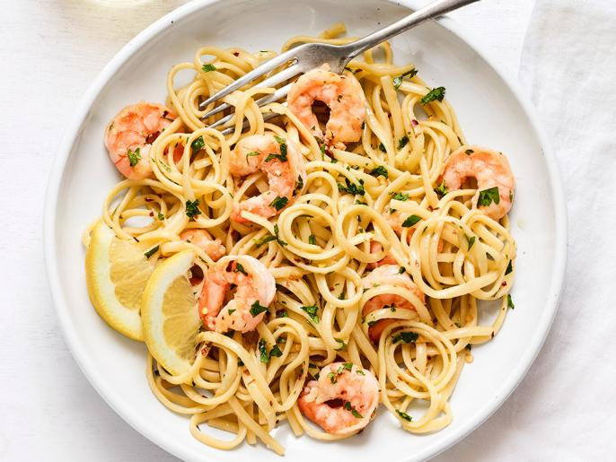

Shrimp Scampi

Description:
American can't seem to get enought of shrimp scampi:
It's one of the 10 most-searched recipes on
FoodNetwork.com
during the summer (more popular than burgers!) and
#shrimpscampi has more than 134,000 posts on instagram.
Ingredients:
- Kosher salt
- 12 ounces linguine
- 1 1/4 pounds large shrimp, peeled and deveined
- 1/3 cup extra-virgin olive oil
- 5 cloves garlic, minced
- 1/4 to 1/2 teaspoon red pepper flakes
- 1/3 cup dry white wine
- Juice of 1/2 lemon, plus wedges for serving
- 4 tablespoons unsalted butter, cut into pieces
- 1/4 cup finely chopped fresh parsley